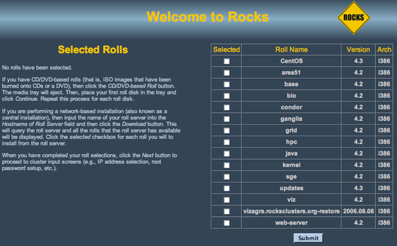
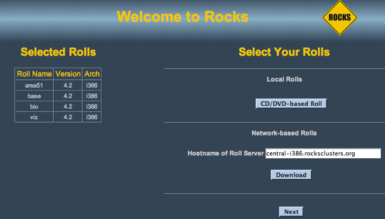

Base Roll: Users Guide: 
| ||
|---|---|---|
| Prev | Chapter 2. Installing a Rocks Cluster | Next |
This section describes installing a Rocks frontend from a "Central" server over the wide area network, a process called WAN kickstart. The client frontend will retrieve Rocks Rolls and configuration over the Internet, and use these to install itself.
First, boot the node that will be your new frontend with the Kernel/Boot Roll CD (see steps 1 and 2 in the section "Install Frontend").
Then you'll see the screen as described in step 3 in the section "Install Frontend". Enter the FQDN of your central server in the Hostname of Roll Server text box (don't change this value if you want to use the default central server) then and click the Download button.
You'll see a screen that lists all the rolls available on the central server. Here's an example:

Now, select the rolls from the central server. To select a roll, click the checkbox next to roll. For example, this screen shows the area51, base, bio and viz rolls selected:
Click the Submit button to continue.
Now you'll see a screen similar to the screen below. This screen indicates that the area51, base, bio and viz rolls have been selected.

To select more rolls from another server, go to step 1 and enter a different FQDN.
If you'd like to include CD-based rolls with your Network-based rolls, click the CD/DVD-based Roll button and follow the instructions in the section "Install Frontend" starting at step 4.
When you are finished installing CD-based rolls, you will enter into the familiar Rocks installation windows. These may change depending on what rolls you have selected. Again the section "Install Frontend" has details for this process.
The installer will then retrieve the chosen rolls, rebuild the distribution with all rolls included, then install the packages. Finally, the installer will proceed with the post-section and other elements of a standard frontend install.
Your frontend should now be installed and ready to initialize compute nodes (see section Install Compute Nodes).